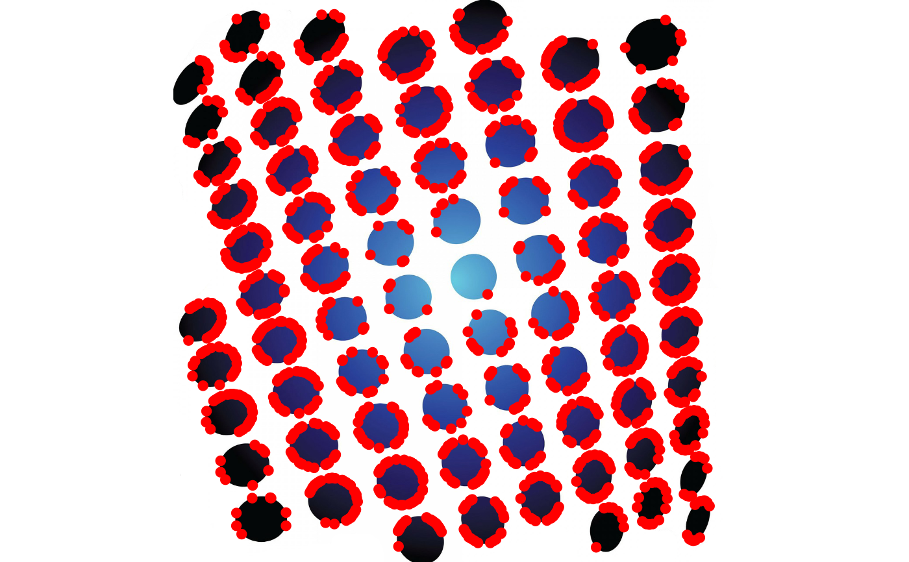

ORBkeypoints finds and describes keypoints in an image
using the ORB method. Keypoints are prominent features that can be used to
quickly match images.
Usage
ORBkeypoints(
image,
mask = NULL,
n_features = 500,
scale_factor = 1.2,
n_levels = 8,
edge_threshold = 31,
first_level = 0,
WTA_K = 2,
score_type = "HARRIS",
patch_size = 31,
fast_threshold = 20
)Arguments
- image
An
Imageobject.- mask
A binary
Imageobject with the same dimensions asimage. This can be used to mask out pixels that should not be considered when searching for keypoints (pixels set to 0 in the mask will be ignored during the search).- n_features
The maximum number of features to retain.
- scale_factor
The pyramid decimation ratio, always greater than 1 (default: 1.2).
scaleFactor = 2uses a "classical" pyramid, where each level has 4 times less pixels than the previous one. Such a large scale factor will degrade feature matching scores dramatically. On the other hand, a scale factor too close to 1 will require longer computation times.- n_levels
The number of pyramid decimation levels (default: 8).
- edge_threshold
The size of the border where the features are not detected. It should roughly match the
patch_sizeparameter below (default: 31).- first_level
The level of the pyramid to put the source image into (default: 0). Previous levels are filled with upscaled versions of the source image.
- WTA_K
The number of points that produce each element of the oriented BRIEF descriptor for a keypoint.
WTA_K = 2(the default) takes a random pair of points and compare their brightness, yielding a binary response.WTA_K = 3takes 3 random points, finds the point of maximum brightness, and output the index of the winner (0, 1 or 2).WTA_K = 4perform the operation but with 4 random points , and output the index of the winner (0, 1, 2, or 3). WithWTA_K = 3andWTA_K = 4, the output will require 2 bits for storage and, therefore, will need a special variant of the Hamming distance for keypoint matching ("BruteForce-Hamming(2)" inmatchKeypoints).- score_type
A character string indicating the the scoring method to use.
"HARRIS"(the default) uses the Harrisalgorithm to rank the detected features."FAST"is an alternative method that produces slightly less stable keypoints but is a little faster to compute.- patch_size
The size of the patch used to compute the the oriented BRIEF descriptor (default: 31).
- fast_threshold
A threshold for selecting "good enough" keypoints (default: 20)
Value
A list with two elements:
keypoints: a matrix containing the following information about each keypoint:
angle: the keypoint orientation in degrees, between 0 and 360, measured relative to the image coordinate system, i.e., clockwise.
octave: the pyramid layer from which the keypoint was extracted.
x: the x coordinate of the keypoint.
y: the y coordinate of the keypoint.
response: the response by which the keypoint have been selected. This can be used for the further sorting or subsampling.
size: the diameter of the keypoint neighborhood.
descriptors: a single-channel
Imagewith each row corresponding to the BRIEF descriptor of a single keypoint.
Author
Simon Garnier, garnier@njit.edu
Examples
dots <- image(system.file("sample_img/dots.jpg", package = "Rvision"))
kp <- ORBkeypoints(dots, n_features = 40000)
plot(dots)
points(kp$keypoints[, c("x", "y")], pch = 19, col = "red")
